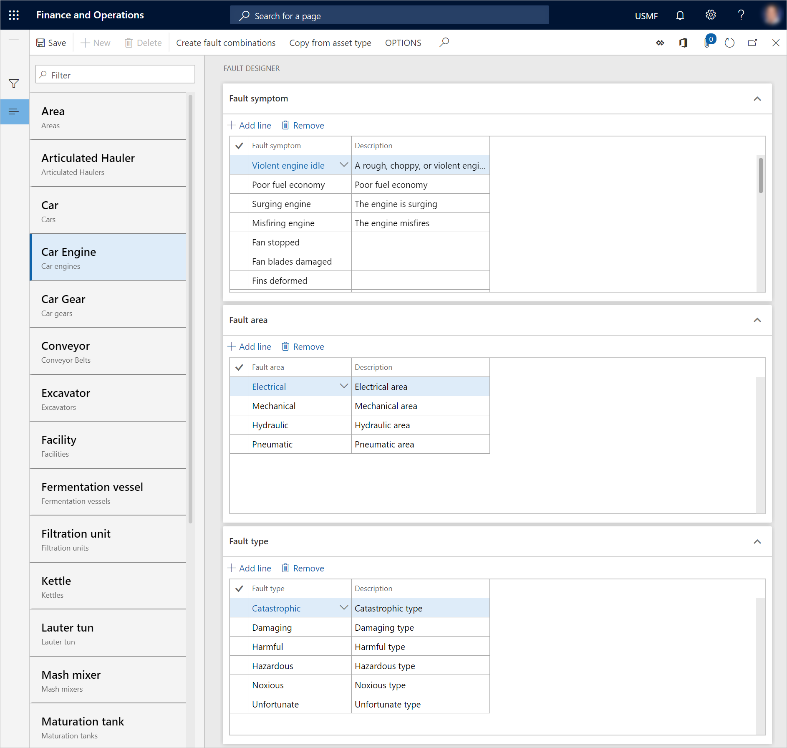

Fehlermanagement
Important
Dynamics 365 for Finance and Operations hat sich zu speziell entwickelten Anwendungen entwickelt, mit denen Sie bestimmte Geschäftsfunktionen verwalten können. Weitere Informationen zu diesen Änderungen finden Sie im Dynamics 365-Lizenzierungshandbuch.
In der Anlagenverwaltung können Sie den Fehlerdesigner verwenden, um Fehlersymptome, Fehlerbereiche und Fehlerarten für Anlagentypen einzurichten. Auf diese Weise können Sie Fehler verwalten, die bei Anlagen erkannt werden. Darüber hinaus können Fehlerursachen und Vorschläge für das Korrigieren von Fehlern für einen Arbeitsauftrag erfasst werden.
Der Prozess für die Fehlererfassung und -verwaltung besteht aus folgenden Schritten.
- Erstellen einer Liste der Fehlersymptome, Fehlerbereiche und Fehlerarten, die bei Ihren Anlagentypen auftreten könnten.
- Im Fehlerdesigner das Einrichten von Symptomen, Fehlerbereichen und Fehlerarten.
Unten sind einige Beispiele angegeben, mit deren Hilfe Sie den Unterschied zwischen Fehlersymptomen, Fehlerbereichen und Fehlerarten erkennen können.
Fehlersymptome:
- Unausgeglichene Spannungen
- Kurzschluss
- Lärm
- Leck
- Erschütterungen
Fehlerbereiche:
- Elektrisch
- Mechanisch
- Hydraulisch
- Pneumatisch
Fehlertypen:
- Fehlerhafte Hauptstatorwicklung
- Fehlerhafte Diode
- Geänderte Wicklungen
- Fehlerhafter Generator
- Fehlerhafter Sensor
Erstellen von Fehlersymptomen
Gehen Sie folgendermaßen vor, um eine Liste von Symptomen zu erstellen, die im Fehlerdesigner verwendet werden können.
- Wählen Sie Anlagenverwaltung > Einstellungen > Fehler > Fehlersymptome aus.
- Wählen Sie Neu aus, um einen Datensatz zu erstellen.
- Geben Sie im Feld Fehlersymptom einen Namen für das Fehlersymptom ein.
- Geben Sie im Feld Beschreibung eine Beschreibung ein.
- Wählen Sie Speichern.
Erstellen von Fehlerbereichen
Gehen Sie folgendermaßen vor, um eine Liste von Bereichen oder Standorten zu erstellen, die im Fehlerdesigner verwendet werden können.
- Wählen Sie Anlagenverwaltung > Einstellungen > Fehler > Fehlerbereiche aus.
- Wählen Sie Neu aus, um einen Datensatz zu erstellen.
- Geben Sie im Feld Fehlerbereich einen Namen für den Fehlerbereich ein.
- Geben Sie im Feld Beschreibung eine Beschreibung ein.
- Wählen Sie Speichern.
Fehlertypen erstellen
Gehen Sie folgendermaßen vor, um eine Liste von Fehlertypen zu erstellen, die im Fehlerdesigner verwendet werden können.
- Wählen Sie Anlagenverwaltung > Einstellungen > Fehler > Fehlertypen aus.
- Wählen Sie Neu aus, um einen Datensatz zu erstellen.
- Geben Sie im Feld Fehlertyp einen Namen für den Fehlertyp ein.
- Geben Sie im Feld Beschreibung eine Beschreibung ein.
- Wählen Sie Speichern.
Einrichten des Fehlerdesigners
Im Fehlerdesigner richten Sie Fehlerdaten für Anlagentypen ein.
Wählen Sie Anlagenverwaltung > Einstellungen > Fehler > Fehlerdesigner aus.
Wählen Sie im linken Bereich den Typ der Anlage aus, für die Sie einen Fehlerdatensatz einrichten möchten.
Wählen Sie im Inforegister Fehlersymptom Position hinzufügen und dann im Feld Fehlersymptom ein Fehlersymptom aus.
Wählen Sie im Inforegister Fehlerbereich Position hinzufügen und dann im Feld Fehlerbereich einen Fehlerbereich aus.
Wählen Sie im Inforegister Fehlertyp Position hinzufügen und dann im Feld Fehlertyp einen Fehlertyp aus.
Um schnell Kombinationen aller vorhandenen Fehlersymptome, -bereiche und -typen für den ausgewählten Anlagetyp erstellen zu können, wählen Sie Fehlerkombinationen erstellen aus. Diese Funktion ist hilfreich, wenn Sie viele Fehlersymptome, -bereiche und -typen hinzugefügt haben. Es ist einfacher, die Positionen für beliebige Kombinationen zu löschen, die nicht für den Anlagentyp relevant sind, als neue Positionen manuell zu erstellen.
Note
Um die Einstellungen von Fehlersymptomen, -bereichen und -typen von einem Anlagentyp in den ausgewählten Anlagentyp zu kopieren, wählen Sie Aus Anlagentyp kopieren aus.
Wählen Sie Speichern aus, um die Änderungen zu speichern.

Fehlerursachen erstellen
Gehen Sie folgendermaßen vor, um eine Liste bekannter Fehlerursachen zu erstellen, die einem Arbeitsauftrag oder einer Wartungsanforderung hinzugefügt werden können.
- Wählen Sie Anlagenverwaltung > Einstellungen > Fehler > Fehlerursachen aus.
- Wählen Sie Neu aus, um einen Datensatz zu erstellen.
- Geben Sie im Feld Fehlerursache einen Namen für die Fehlerursache ein.
- Geben Sie im Feld Beschreibung eine Beschreibung ein.
- Wählen Sie Speichern.
Erstellen von Fehlerlösungen
Gehen Sie folgendermaßen vor, um eine Liste von Lösungs- und Reparaturvorschlägen zu erstellen, die einem Arbeitsauftrag oder einer Wartungsanforderung hinzugefügt werden können.
- Wählen Sie Anlagenverwaltung > Einstellungen > Fehler > Fehlerlösungen aus.
- Wählen Sie Neu aus, um einen Datensatz zu erstellen.
- Geben Sie im Feld Fehlerlösung einen Namen für die Fehlerlösung ein.
- Geben Sie im Feld Beschreibung eine Beschreibung ein.
- Wählen Sie Speichern.
Note
Sie können die Namen der Fehlersymptome, -bereiche, -typen, -ursachen und -lösungen nach Bedarf ändern. Die Namenänderungen werden automatisch in den betreffenden Fehlererfassungen angezeigt.